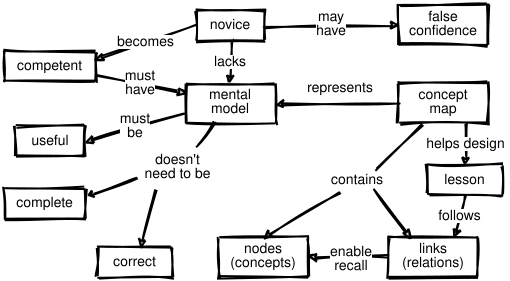
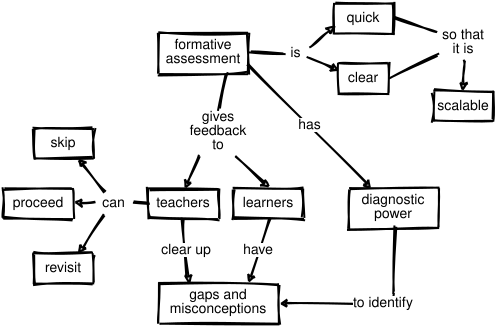

2 Mental Models and Formative Assessment
The first task in teaching is to figure out who your learners are. Our approach is based on the work of researchers like Patricia Benner, who studied how nurses progress from novice to expert (Benner 2000). Benner identified five stages of cognitive development that most people go through in a fairly consistent way. For our purposes, we will simplify this progression to three stages:
- Novices
- don’t know what they don’t know, i.e. they don’t yet have a usable mental model of the problem domain.
- Competent practitioners
- have a mental model that’s adequate for everyday purposes. They can do normal tasks with normal effort under normal circumstances, and have some understanding of the limits to their knowledge (i.e. they know what they don’t know).
- Experts
- have mental models that include exceptions and special cases, which allows them to handle situations that are out of the ordinary. We will discuss expertise in more detail in Chapter 3.
So what is a mental model? As the name suggests, it is a simplified representation of the most important parts of some problem domain that is good enough to enable problem solving. One example is the ball-and-spring models of molecules used in high school chemistry. Atoms aren’t actually balls, and their bonds aren’t actually springs, but the model enables people to reason about chemical compounds and their reactions. A more sophisticated model of an atom has a small central ball (the nucleus) surrounded by orbiting electrons. It’s also wrong, but the extra complexity enables people to explain more and to solve more problems. (Like software, mental models are never finished: they’re just used.)
Presenting a novice with a pile of facts is counter-productive because they don’t yet have a model to fit those facts into. In fact, presenting too many facts too soon can actually reinforce the incorrect mental model they’ve cobbled together. As (Muller et al. 2007) observed in a study of video instruction for science students:
Students have existing ideas about…phenomena before viewing a video. If the video presents…concepts in a clear, well illustrated way, students believe they are learning but they do not engage with the media on a deep enough level to realize that what is presented differs from their prior knowledge… There is hope, however. Presenting students’ common misconceptions in a video alongside the…concepts has been shown to increase learning by increasing the amount of mental effort students expend while watching it.
Your goal when teaching novices should therefore be to help them construct a mental model so that they have somewhere to put facts. For example, Software Carpentry’s lesson on the Unix shell introduces fifteen commands in three hours. That’s one command every twelve minutes, which seems glacially slow until you realize that the lesson’s real purpose isn’t to teach those fifteen commands: it’s to teach paths, history, tab completion, wildcards, pipes, command-line arguments, and redirection. Specific commands don’t make sense until novices understand those concepts; once they do, they can start to read manual pages, search for the right keywords on the web, and tell whether the results of their searches are useful or not.
The cognitive differences between novices and competent practitioners underpin the differences between two kinds of teaching materials. A tutorial helps newcomers to a field build a mental model; a manual, on the other hand, helps competent practitioners fill in the gaps in their knowledge. Tutorials frustrate competent practitioners because they move too slowly and say things that are obvious (though they are anything but obvious to novices). Equally, manuals frustrate novices because they use jargon and don’t explain things. This phenomenon is called the expertise reversal effect (Kalyuga et al. 2003), and is one of the reasons you have to decide early on who your lessons are for.
One of the reasons Unix and C became popular is that Kernighan and Ritchie (1988) somehow managed to be good tutorials and good manuals at the same time. (Fehily 2008) and (Ray and Ray 2014) are among the very few other books in computing that achieve this; even after re-reading them several times, I don’t know how they pull it off.
2.1 Are People Learning?
Mark Twain once wrote, “It ain’t what you don’t know that gets you into trouble. It’s what you know for sure that just ain’t so.” One of the exercises in building a mental model is therefore to clear away things that don’t belong. Broadly speaking, novices’ misconceptions fall into three categories:
- Factual errors
- like believing that Vancouver is the capital of British Columbia (it’s Victoria). These are usually simple to correct.
- Broken models
- like believing that motion and acceleration must be in the same direction. We can address these by having novices reason through examples where their models give the wrong answer.
- Fundamental beliefs
- such as “the world is only a few thousand years old” or “some kinds of people are just naturally better at programming than others” Patitsas et al. (2016). These errors are often deeply connected to the learner’s social identity, so they resist evidence and rationalize contradictions.
People learn fastest when teachers identify and clear up learners’ misconceptions as the lesson is being delivered. This is called formative assessment because it forms (or shapes) the teaching while it is taking place. Learners don’t pass or fail formative assessment; instead, it gives both the teacher and the learner feedback on how well they are doing and what they should focus on next. For example, a music teacher might ask a learner to play a scale very slowly to check their breathing. The learner finds out if they are breathing correctly, while the teacher gets feedback on whether the explanation they just gave made sense.
The counterpoint to formative assessment is summative assessment, which takes place at the end of the lesson. Summative assessment is like a driver’s test: it tells the learner whether they have mastered the topic and the teacher whether their lesson was successful. One way of thinking about the difference is that a chef tasting food as she cooks it is formative assessments, but the guests tasting it once it’s served is summative.
Unfortunately, school has trained most people to believe that all assessment is summative, i.e. that if something feels like a test, doing poorly will count against you. Making formative assessments feel informal helps reduce this anxiety; in my experience, using online quizzes, clickers, or anything else seems to increase it, since most people today believe that anything they do on the web is being watched and recorded.
In order to be useful during teaching, a formative assessment has to be quick to administer (so that it doesn’t break the flow of the lesson) and have an unambiguous correct answer (so that it can be used with groups). The most widely used kind of formative assessment is probably the multiple choice question (MCQ). A lot of teachers have a low opinion of them, but when they are designed well, they can reveal much more than just whether someone knows specific facts. For example, suppose you are teaching children how to do multi-digit addition (Ojose 2015) and you give them this MCQ:
What is 37 + 15?
- 52
- 42
- 412
- 43
The correct answer is 52, but the other answers provide valuable insights:
If the child chooses 42, she has no understanding of what “carrying” means. (She might well write 12 as the answers to 7+5, then overwrite the 1 with the 4 she gets from 3+1.)
If she chooses 412, she is treating each column of numbers as a separate problem. This is still wrong, but it’s wrong for a different reason.
If she chooses 43 then she knows she has to carry the 1 but is carrying it back into the column it came from. Again, this is a different mistake, and requires a different clarifying explanation from the teacher.
Each of these incorrect answers is a plausible distractor with diagnostic power. A distractor is a wrong or less-than-best answer; “plausible” means that it looks like it could be right, while “diagnostic power” means that each of the distractors helps the teacher figure out what to explain next to that particular learner.
The spread of responses to a formative assessment guides what you do next. If enough of the class has the right answer, you move on. If the majority of the class chooses the same wrong answer, you should go back and work on correcting the misconception that distractor points to. If their answers are evenly split between several options they are probably just guessing, so you should back up and re-explain the idea in a different way. (Repeating exactly the same explanation will probably not be useful, which is one of things that makes so many video courses pedagogically ineffective.)
What if most of the class votes for the right answer but a few vote for wrong ones? In that case, you have to decide whether you should spend time getting the minority caught up or whether it’s more important to keep the majority engaged. No matter how hard you work or what teaching practices you use, you won’t always be able to give everyone what they need; it’s your responsibility as a teacher to make the call.
In order to come up with plausible distractors, think about the questions your learners asked or problems they had the last time you taught this subject. If you haven’t taught it before, think about your own misconceptions, ask colleagues about their experiences, or look at the history of your field: if everyone misunderstood your subject in some way fifty years ago, the odds are that a lot of your learners will still misunderstand it that way today. You can also ask open-ended questions in class to collect misconceptions about material to be covered in a later class, or check question and answer sites like Quora or Stack Overflow to see what people learning the subject elsewhere are confused by.
Developing formative assessments makes your lessons better because it forces you to think about your learners’ mental models. In my experience, once I do this I automatically write the lesson to cover the most likely gaps and errors. Formative assessments therefore pay off even if they aren’t used (though teaching is more effective if they are).
MCQs aren’t the only kind of formative assessment: Chapter 12 describes other kinds of exercises that are quick and unambiguous. Whatever you pick, you should do something that takes a minute or two every 10–15 minutes to make sure that your learners are actually learning. This rhythm isn’t based on an intrinsic attentional limit: (Wilson and Korn 2007) found little support for the often-repeated claim that learners can only pay attention for 10–15 minutes. Instead, the guideline ensures that if a significant number of people have fallen behind, you only have to repeat a short portion of the lesson. Frequent formative assessments also keep learners engaged, particularly if they involved small-group discussion (Section 9.2).
Formative assessments can also be used before lessons. If you start a class with an MCQ and everyone answers it correctly, you can avoid explaining something that your learners already know. This kind of active teaching gives you more time to focus on things they don’t know. It also shows learners that you respect their time enough not to waste it, which helps with motivation (Chapter 10).
Given enough data, MCQs can be made surprisingly precise. The best-known example is the Force Concept Inventory (Hestenes et al. 1992), which assesses understanding of basic Newtonian mechanics. By interviewing a large number of respondents, correlating their misconceptions with patterns of right and wrong answers, and then improving the questions, its creators constructed a diagnostic tool that can pinpoint specific misconceptions. Researchers can then use that tool to measure the effect of changes in teaching methods (Hake 1998).
Tew and others developed and validated a language-independent assessment for introductory programming (Tew and Guzdial 2011); (Parker et al. 2016) replicated it, and (Hamouda et al. 2017) is developing a concept inventory for recursion. However, it’s very costly to build tools like this, and learners’ ability to search for answers online is an ever-increasing threat to their validity.
Working formative assessments into class only requires a little bit of preparation and practice. Giving learners colored or numbered cards so that they can all answer an MCQ at once (rather than holding up their hands in turn), having one of the options be, “I have no idea,” and encouraging them to talk to their neighbors for a few seconds before answering will all help ensure that your teaching flow isn’t disrupted. Section 9.2 describes a powerful, evidence-based teaching method that builds on these simple ideas.
Teachers sometimes put supposedly-silly answers like “my nose!” on MCQs, particularly ones intended for younger learners. However, these don’t provide any insight into learners’ misconceptions, and most people don’t actually find them funny. As a rule, you should only include a joke in a lesson if you find it funny the third time you re-read it.
A lesson’s formative assessments should prepare learners for its summative assessment: no one should ever encounter a question on an exam that the teaching did not prepare them for. This doesn’t mean you should never put new kinds of problems on an exam, but if you do, you should have given learners practice tackling novel problems beforehand. Chapter 6 explores this in depth.
2.2 Notional Machines
The term computational thinking is bandied about a lot, in part because people can agree it’s important while meaning very different things by it. Rather than arguing over what it does and doesn’t include, it’s more useful to think about the notional machine that you want learners to understand (Boulay 1986). According to (Sorva 2013), a notional machine:
is an idealized abstraction of computer hardware and other aspects of programs’ runtime environments;
enables the semantics of programs to be described; and
correctly reflects what programs do when executed.
For example, my notional machine for Python is:
Running programs live in memory, which is divided between a call stack and a heap.
Memory for data is always allocated from the heap.
Every piece of data is stored in a two-part structure. The first part says what type the data is, and the second part is the actual value.
Booleans, numbers, and character strings are never modified after they are created.
Lists, sets, and other collections store references to other data rather than storing those values directly. They can be modified after they are created, i.e. a list can be extended or new values can be added to a set.
When code is loaded into memory, Python converts it to a sequence of instructions that are stored like any other data. This is why it’s possible to assign functions to variables and pass them as parameters.
When code is executed, Python steps through the instructions, doing what each one tells it to in turn.
Some instructions make Python read data, do calculations, and create new data. Other instructions control what instructions Python executes, which is how loops and conditionals work. Yet another instruction tells Python to call a function.
When a function is called, Python pushes a new stack frame onto the call stack.
Each stack frame stores variables’ names and references to data. Function parameters are just another kind of variable.
When a variable is used, Python looks for it in the top stack frame. If it isn’t there, it looks in the bottom (global) frame.
When the function finishes, Python erases its stack frame and jumps backs to the instructions it was executing before the function call. If there isn’t a “before,” the program has finished.
I use this cartoon version of reality whenever I teach Python. After about 25 hours of instruction and 100 hours of work on their own time, I expect most learners to have a mental model that includes most or all of these features.
2.3 Exercises
2.3.2 Symptoms of Being a Novice (whole class/5 min)
Saying that novices don’t have a mental model of a particular domain is not the same as saying that they don’t have a mental model at all. Novices tend to reason by analogy and guesswork, borrowing bits and pieces of mental models from other domains that seem superficially similar.
People who are doing this often say things that are not even wrong. As a class, discuss what some other symptoms of being a novice are. What does someone do or say that leads you to classify them as a novice in some domain?
2.3.3 Modelling Novice Mental Models (pairs/20 min)
Create a multiple choice question related to a topic you have taught or intend to teach and explain the diagnostic power of each its distractors (i.e. what misconception each distractor is meant to identify).
When you are done, trade MCQs with a partner. Is their question ambiguous? Are the misconceptions plausible? Do the distractors actually test for them? Are any likely misconceptions not tested for?
2.3.4 Thinking Things Through (whole class/15 min)
A good formative assessment requires people to think through a problem. For example, imagine that you have placed a block of ice in a bathtub and then filled the tub to the rim with water. When the ice melts, does the water level go up (so that the tub overflows), go down, or stay the same (Figure 2.1)?
The correct answer is that the level stays the same: the ice displaces its own weight in water, so it exactly fills the “hole” it has made when it melts. Figuring out why helps people build a model of the relationship between weight, volume, and density (Epstein 2002).
Describe another formative assessment you have seen or used that required people to think something through and thereby identify flaws in their reasoning. When you are done, explain your example to a partner and give them feedback on theirs.
2.3.5 A Different Progression (individual/15 min)
The novice-competent-expert model of skill development is sometimes called the Dreyfus model. Another commonly-used progression is the four stages of competence:
- Unconscious incompetence:
- the person doesn’t know what they don’t know.
- Conscious incompetence:
- the person realizes that they don’t know something.
- Conscious competence:
- the person has learned how to do something, but can only do it while concentrating and may still need to break things down into steps.
- Unconscious competence:
- the skill has become second nature and the person can do it reflexively.
Identify one subject where you are at each level. What level are most of your learners at in the subject you teach most often? What level are you trying to get them to? How do these four stages relate to the novice-competent-expert classification?
2.3.6 What Kind of Computing? (individual/10 min)
(Tedre and Sutinen 2008) summarizes three traditions in computing:
- Mathematical
- Programs are the embodiment of algorithms. They are either correct or incorrect, as well as more or less efficient.
- Scientific
- Programs are more or less accurate models of information processes that can be studied using the scientific method.
- Engineering
- Programs are built objects like dams and airplanes, and are more or less effective and reliable.
Which of these best matches your mental model of computing? If none of them do, what model do you have?
2.3.7 Explaining Why Not (pairs/5 min)
One of your learners thinks that there is some kind of difference between text that they type in character by character and identical text that they copy and paste. Think of a reason they might believe this or something that might have happened to give them this impression, then pretend to be that learner while your partner explains why this isn’t the case. Trade roles and try again.
2.3.8 Your Model Now (whole class/5 min)
As a class, create a list of the key elements of your mental model of learning. What are the half-dozen most important concepts and how do they relate?
2.3.9 Your Notional Machines (small groups/20 min)
Working in small groups, write up a description of the notional machine you want learners to use to understand how their programs run. How does a notional machine for a blocks-based language like Scratch differ from that for Python? What about a notional machine for spreadsheets or for a browser that is interpreting HTML and CSS when rendering a web page?
2.3.10 Enjoying Without Learning (individual/5 min)
Multiple studies have shown that teaching evaluations don’t correlate with learning outcomes Uttl et al. (2017), i.e. that how highly learners rate a course doesn’t predict how much they remember. Have you ever enjoyed a class that you didn’t actually learn anything from? If so, what made it enjoyable?
Review

